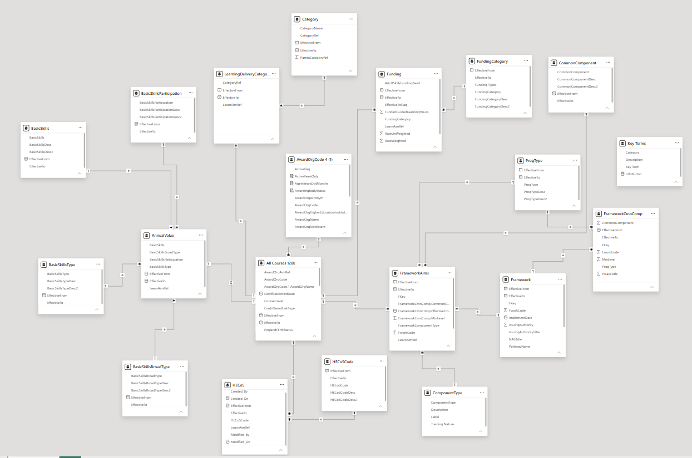

AI-Powered Learning Analytics Platform
Built at Consultancy Outfit
The Problem
The organization wanted insights and information on 130,000+ learning aims — courses with multiple attributes like level, funding stream, awarding body, delivery method, and eligibility rules. Students couldn't find the right course without navigating complex filters. Management couldn't track which programs were performing, where funding was going, or which skills were underrepresented across departments.
The Solution
I built an enterprise AI chatbot on top of this massive dataset — letting users ask natural-language questions like "Show me Level 3 IT courses with full funding" or "Which awarding bodies have the highest completion rates?" Students get personalized recommendations. Managers get real-time analytics. All through conversation.
My Role
I led this project end-to-end — from data architecture and AI model design to frontend integration and deployment. I built the galaxy schema, trained the vector embeddings, developed the dual-model routing logic, and embedded the chatbot inside Power BI. I owned the architecture, implementation, and rollout.
Impact
The platform made 130,000+ learning aims searchable by meaning, not just by metadata. Students find relevant courses in seconds instead of minutes. Managers track funding allocation, awarding body performance, and skill coverage across departments — all by asking questions in plain English.
AI Chatbot Demo
Watch the AI chatbot in action - natural language queries powered by Azure OpenAI
Live Dashboard
Explore the interactive Power BI dashboard below. Use the filters to navigate through course analytics, enrollment trends, and performance metrics. The AI chatbot is integrated directly into this interface.
Fully interactive — try filtering by course level, funding type, or awarding body
What It Does
For Students & Employees
Ask "Show me Level 3 healthcare courses with full funding" or "What can I take after completing Business Admin?" — get filtered, eligible options instantly instead of clicking through 130,000+ records.
For Management
Get instant answers to operational questions: "Which awarding bodies have the highest withdrawal rates?" or "Where is our adult education budget being spent?" — no more waiting for manual reports.
Semantic Search at Scale
Vector embeddings understand intent across 130,000+ records. Search "data visualization" and get Tableau, Power BI, and Python courses — even if the word "visualization" isn't in their titles. Works across levels, funding types, and awarding bodies.
Conversational Memory
The chatbot remembers context. Ask "What about advanced options?" after inquiring about Python basics, and it knows exactly what you mean.
Data Architecture
The LMS database had 40+ tables with complex relationships — enrollments linked to courses, courses linked to skills, skills linked to job roles, and users with multiple personas (student, manager, admin). I designed a galaxy schema that serves both BI reporting and AI queries without duplicating data.

- Single source of truth: fact tables for metrics, dimension tables for AI context
- Vector embedding tables store semantic course representations for similarity search
Dual-Model AI Architecture
The challenge: a single AI model can't handle both precise analytics ("How many people completed AWS certification?") and open-ended recommendations ("What's a good cloud course for beginners?"). I built a routing layer that classifies the intent and dispatches to the right model.
SQL Model — The Analyst
- • Converts natural language to executable SQL
- • Handles counts, aggregations, filters, time ranges
- • Returns exact numbers with source attribution
Vector Model — The Advisor
- • Embeds course descriptions into semantic vectors
- • Finds conceptually similar content
- • Generates personalized learning paths
How it works: Your question hits a classifier first. "Show me completion rates" → SQL model. "What should I learn next?" → Vector model. Both can run in parallel for complex questions, with Azure OpenAI merging the results into a coherent response.
Power Apps Integration
The chatbot lives inside Power BI — not as a separate tool, but as a natural part of the analytics workflow. Users can look at a dashboard, ask "Why did enrollment drop in March?", and get an AI-generated explanation with supporting data, all without leaving the report.
- • Custom chat UI with streaming responses — feels like ChatGPT, works inside your BI
- • Session persistence: pick up yesterday's conversation where you left off
- • Power Automate orchestrates API calls, error handling, and response formatting
- • Embedded canvas app inside Power BI — one interface for data and dialogue
Technology Stack
AI & ML
- • Azure OpenAI GPT-4
- • Vector Embeddings
- • NLP
Backend
- • Python (API Development)
- • SQL Server
- • REST APIs
Frontend
- • Power BI Desktop
- • Power Apps
- • Power Automate